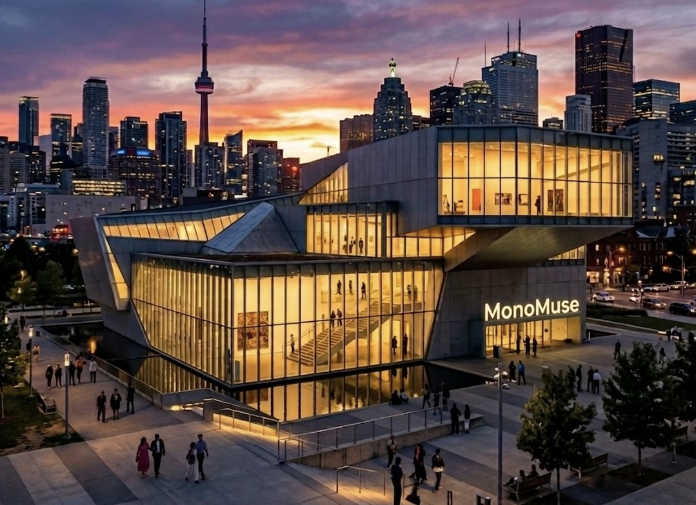

Our mission
MonoMuse exists to make the dialogue between art and technology public, approachable, and unforgettable. We commission and present work that asks bold questions—about identity, machines, cities, and imagination—while keeping visitors at the center of every experience.
Who we serve
We welcome anyone curious about how culture is changing in a connected world. Our community includes:
- First-time museum-goers and families looking for hands-on, low-pressure entry points
- Students, educators, and researchers who use our space as a living lab for ideas
- Artists, designers, and technologists who prototype, exhibit, and collaborate here
- Members and neighbors who return for new rotations, talks, and late-night openings
Founding year
MonoMuse opened its doors in 2018, born from a small collective of curators and engineers who believed museums should feel as experimental as the tools in a studio.
Milestones
From a single gallery to a city-wide conversation, a few moments shaped who we are:
- 2018 — Launch of the flagship “Signal & Surface” season and our first artist-in-residence program
- 2020 — Hybrid exhibitions and remote studio visits, expanding access beyond the building
- 2022 — Opening of the Immersion Wing and the youth maker fellowship
- 2024 — Regional partnership tour: MonoMuse works traveled to three partner cities
- 2026 — New late-hours program and expanded ticketing for peak exhibitions
Visit in person
Planning a trip? Start on the home page for an overview, then grab tickets when you are ready—we keep a few walk-up slots each day for spontaneous explorers.
Planning To Visit? - Buy Tickets Here
Find us
MonoMuse is located on the Carnegie Mellon University campus in Pittsburgh, Pennsylvania.